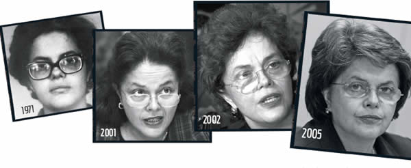

Dilma Vana Rousseff GCMD é uma economista e política brasileira, filiada ao Partido dos Trabalhadores (PT) e 36ª Presidente do Brasil, tendo exercido o cargo de 2011 até seu afastamento por um processo de impeachment em 2016.
Dilma Rousseff (1947) é uma política brasileira. Ex-presidente da República do Brasil, a primeira mulher eleita para presidir o país. Foi ministra da Casa Civil do governo de Lula no período de 2005 a 2010.
“Nós acreditamos que, sempre em qualquer situação, é muito melhor o diálogo, o consenso e a construção democrática do que qualquer outro tipo de ruptura institucional.”
Sua História
Dilma Vana Rousseff (1947) nasceu em Belo Horizonte, Minas Gerais, no dia 14 de dezembro de 1947. Filha de Péter Russév, imigrante búlgaro, que virou Pedro Rousseff e da professora Dilma Jane Silva, nascida em Resende, Rio de Janeiro. Iniciou seus estudos no Colégio Nossa Senhora do Sion. Cursou o ensino médio no Colégio Estadual Central de Minas Gerais.
Na adolescência, interessou-se por ideais socialistas. No período do regime militar, que durou entre os anos de 1964 a 1985, atuou na luta armada em movimentos revolucionários como o COLINA-Comando de Libertação Nacional, o VAR-Palmares-Vanguarda Armada Revolucionária Palmares.
Dilma foi presa pela Operação Bandeirante (Oban) e pelo DOPS-Departamento de Ordem Política e Social. Cumpriu pena e em seguida foi solta. Em 1977 graduou-se em Economia pela Universidade Federal do Rio Grande do Sul.
Dilma Rousseff entrou para a vida política no estado do Rio Grande do Sul atuando pelo PDT-Partido Trabalhista do Brasil. Entre 1985 e 1988, foi Secretária da Fazenda do Governo Municipal de Porto Alegre. No início dos anos 1990 atuou como presidente da Fundação de Economia e Estatística do Rio Grande do Sul.
Em 1993 tornou-se secretária de Energia, Minas e Comunicações do Rio Grande do Sul, no governo de Alceu Colares. De 1999 a 2002, foi Secretária de Minas e Energia do governo daquele estado. Em 2001, filiou-se ao Partido dos Trabalhadores (PT), quando esse era presidido por Luís Inácio Lula da Silva
No período entre 2005 e 2010, Dilma Rousseff foi preparada por Lula para candidatar-se a sua sucessão, o que acabou ocorrendo em 2010, sendo a primeira mulher eleita para presidente, da história do Brasil. Em 2014, Dilma foi reeleita para o mandato de 2015/2018.
Em 2015, em meio às investigações da “Operação Lava-Jato”, pela Polícia Federal, vários integrantes do governo Lula foram presos e o país entrou em uma grave recessão. O povo foi às ruas pedir a saída da presidente. No dia 2 de dezembro de 2015, a Câmara dos Deputados aceitou um dos pedidos de impeachment contra a Dilma, acusada de crime de responsabilidade fiscal. No dia 17 de abril de 2016 a Câmara dos Deputados votou e aprovou o pedido com 367 votos favoráveis e 137 contrários.
No dia 12 de maio de 2016, o processo foi aprovado pelo Senado com 55 votos favoráveis e 22 contrários, obrigando a presidente a se afastar do cargo durante 180 dias, período em que o processo passou pelo julgamento final. Nesse período, o vice-presidente Michel Temer passou a exercer o cargo, como presidente interino.
No dia 31 de agosto de 2016, o Senado Federal aprovou o pedido de impeachment de Dilma Rousseff, que deixou definitivamente o cargo.
Início da carreira política

- Secretária Municipal da Fazenda(1986-1988).
- Secretária Estadual de Energia, Minas e Comunicações(1990-1994).
- Ministra de Minas e Energia(2002-2010).
- Ministra-chefe da Casa Civil|Dilma se tornou a primeira mulher a assumir o cargo na história do país.
- Campanha presidencial de 2010.
- Campanha presidencial de 2014.
- Primeiro mandato (2011–2014).
- Segundo mandato (2015–2016).
Pós-presidência
Após deixar a presidência, Dilma mudou-se para Porto Alegre e passou a residir em um apartamento de classe média localizado no bairro Tristeza, na zona sul da cidade, observando uma vida simples e reservada. Manteve alguns benefícios dados a ex-presidentes da República, como o direito a ter oito assessores (incluindo para segurança pessoal) e dois carros oficiais. Ela perdeu o direito ao salário integral, de mais de R$ 30 mil, mas se aposentou pelo Regime Geral de Previdência Social logo depois de sua cassação ser aprovada, passando a receber cerca de R$ 5 mil mensais. Em dezembro de 2016, assumiu a presidência do conselho consultivo da Fundação Perseu Abramo, um trabalho remunerado; Rui Falcão chegou a convidá-la para presidir a fundação, mas o convite sofreu resistências dentro do PT.